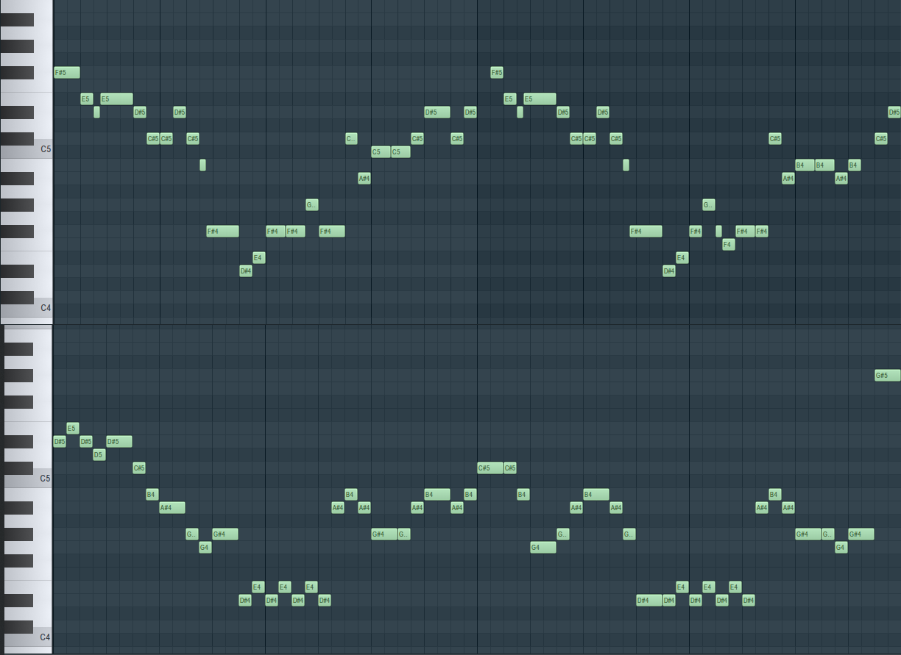
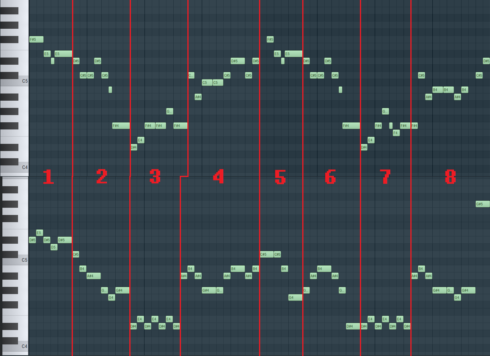
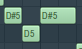

(Above: 'It's Showtime!'; below: Metal Crusher, 0:04-0:12)
They may look very different at first glance, but looking closer, similarities can be seen.
Let's split up the melodies into distinct chunks:

Section 1 of 'It's Showtime!' and Metal Crusher are near identical. The only difference is that instead of starting with a [-2] interval, Metal Crusher starts with [+1 -1] intervals.
Importantly, both use a particular pattern:

This pattern (henceforth the 'staple' pattern) is repeated very often in both melodies, and is the most identifiable part of the motif for our purposes - try to find all of the places it appears in the full example above.
Sections 2 and 6 of both serve to bridge the surrounding sections together with a descending motion. Although they're are not too much alike, it is worth noting how the last 3 notes of section 2 in Metal Crusher is a repeat of the 'staple' pattern.
Looking at sections 3 and 7, Metal Crusher replaces the melody of 'It's Showtime!' with a semitone modulation. That is to say that they're really nothing alike, outside of being the lowest point of the melody. You could argue that the semitone modulation is a variation of the 'staple' pattern, but this is a dubious point to me.
Section 4 of both melodies are near identical. The only differences are that 'It's Showtime!' has a different start, and that it's 'staple' pattern has different intervals.
Section 5 of Metal Crusher is largely different than section 5 of 'It's Showtime!', albeit with a vaguely similar rhythm.
Finally, section 8 of Metal Crusher, like section 4, is a near exact quote of 'It's Showtime!'. The only differences are that the start is changed in the same way, and that the last two notes are simplified into one.
Let's recap.
- Section 1 is a near perfect quote.
- Section 2 is mostly different, but quotes the 'staple' pattern of 'It's Showtime!'.
- Section 3 is completely different.
- Section 4 is a near perfect quote.
- Section 5 is mostly different.
- Section 6 is mostly different.
- Section 7 is completely different.
- Section 8 is a near perfect quote.
Including section 2, only half of Metal Crusher 's supposed quote is close to 'It's Showtime!'.
You might say that this makes this quote bunk, but I disagree.
Metal Crusher quotes 'It's Showtime!' perfectly too often for me to dismiss as mere coincidence.
Yes, it's different in a lot of places, but as the 'It's Showtime!' motif is fairly long, it has room to be modified while keeping enough intact for it to be recognizable.
In my opinion, it's highly likely that Metal Crusher was made with 'It's Showtime!' in mind, keeping the most recognizable parts of the motif, and modifying the rest, in order to give a wholly new feel to the same leitmotif.